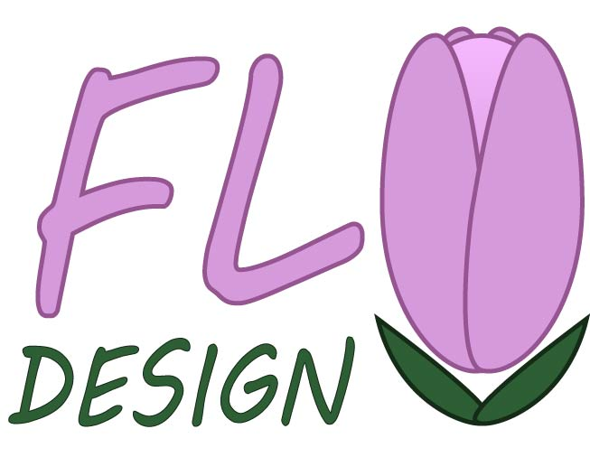

Accueil
Bienvenue sur le site web du Portfolio de LANOY Florine, en première année de WMI
Vous pourrez trouver ci-dessus les pages menant à mon CV, mes projets, et autres...

Vous pourrez trouver ci-dessus les pages menant à mon CV, mes projets, et autres...
